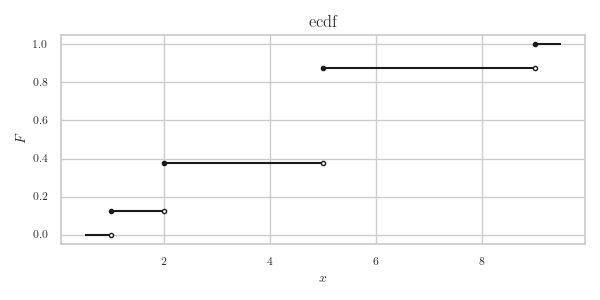
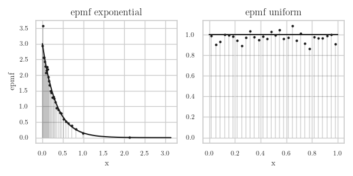
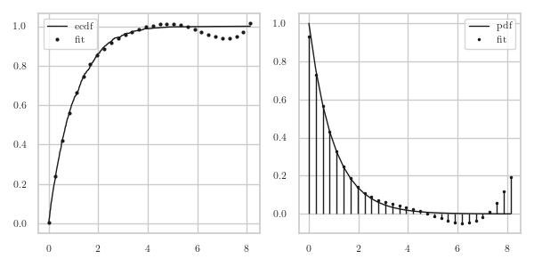

ECDF and Kernels
When analysing data obtained from simulation or measurements we often want to make a histogram of the data. In more general terms, we want to plot an (estimate of) the probability mass function (pmf). With numerical tools this is always a bit awkward because we have to specify, for instance, the number of equal-width bins in which to `throw the data', or, if we don't want equal-width bins, we need to provide the edges of the bins. In other words, we have to choose one or more hyper parameters before we can plot the pmf.
The reason that I find this akwward is because before knowing anything about the data, I have to make a sensible choice for the hyper parameters. Morever, this situation appears somewhat strange to me in view of the fact that making the empirical distribution function (ecdf) from the data does not require any intervention on my part. Can't I then just use the ecdf to make a empirical proability mass function (epmf)?
Here we study two methods to make a epmf from the ecdf. The first is simple, and is based on some interesting ideas of (Lebesgue's) integration theory. The other uses function fitting and is based on machine learning and neural networks. We will test the accuracy of each graphically.
1. ECDF and EPMF
The emperical cumulative distribution function (ecdf) is defined for a given set of real-valued measurements \(x_{1}, \ldots, x_N\) as
\begin{align*} F(x) = \frac{\#\{i : x_{i} \leq x\}}{N} = \frac{1}{N}\sum_{i=1}^N \1{x_i \leq x}, \end{align*}that is, for each \(x\) we count the number of observations that lie in the set \((-\infty, x]\). Despite the mathematical elegance of this definition, we should stay clear from using this to compute the ecdf; the numerical performance is bad. A much better approach is this:
- Sort the measurements \(\{x_i\}\).
- Count how often each value occurs.
- Then take the cumulative sum.
- Normalize, so as to get a real cdf, i.e., a non-decreasing function with \(\lim_{x\to -\infty} F(x) = 0\), and \(\lim_{x\to\infty} F(x) = 1\).
In one function it looks like this.
def ecdf(x):
support, values = np.unique(x, return_counts=True)
X = values.cumsum()
return support, X / len(x)
Read the numpy documentation on np.unique to understand what this function does.
Why don't we have to sort X before calling np.unique?
We could also divide by F[-1] instead of len(X); why is that?
Solution
Reading the documentation is homework.
As for \(F[-1]\), recall that the cumsum adds up to all counted values.
So, \(F[-1]\) contains the number of observations, which is equal to len(X).
We can make a nice plot of the ecdf with a bit of work. 1 shows the result of the code we discuss next. We start with the modules.
import matplotlib.pyplot as plt
import numpy as np
import scipy
For the plot we add filled and open dots to make explicit that the ecdf is a right-continuous function.
X = np.array([2, 5, 2, 1, 9, 5, 5, 5])
x, F = ecdf(X)
fig, ax = plt.subplots(1, 1, figsize=(6, 3))
for i in range(len(x) - 1):
ax.hlines(y=F[i], xmin=x[i], xmax=x[i + 1], color='k')
ax.plot(x[i], F[i], 'o', c='k', mfc='k', ms=3) # closed circles
ax.plot(x[i + 1], F[i], 'o', c='k', mfc='white', ms=3) # open circles
# left boundary
ax.hlines(y=0, xmin=x[0] - 1 / 2, xmax=x[0], color='k')
ax.plot(x[0], 0, 'o', c="k", mfc='white', ms=3)
# right boundary
ax.hlines(y=1, xmin=x[-1], xmax=x[-1] + 0.5, color='k')
ax.plot(x[-1], 1, 'o', c="k", mfc='k', ms=3)
ax.set_xlabel('$x$')
ax.set_ylabel('$F$')
ax.set_title('ecdf')
fig.tight_layout()
fig.savefig("../images/ecdf.png")

Figure 1: The ecdf of X = np.array([2, 5, 2, 1, 9, 5, 5, 5]).
With the ecdf we can make an empirical probability mass function (epmf) of the measurements \(x_1, \ldots, x_{N}\) in various ways. For instance, we can specify a \emph{bandwidth} \(h>0\) and then set
\begin{align*} f(x) = \frac1{Nh} \sum_{j=1}^N \1{x-\frac{h}{2} < x_j \leq x+ \frac{h}{2}} = \frac{F(x+h/2) - F(x-h/2)}h, \end{align*}where \(F\) is the ecdf.
We can refine this idea by saying that points nearby \(u_{i}\) should contribute a bit more than points far away. To achieve this, use a weight function \(w(\cdot)\geq 0\), and set
\begin{equation} \label{org8ca9cba} f(x) = \frac1{Nh} \sum_{j=1}^N w(x-x_{j}) \1{x-\frac{h}{2} < x_j \leq x+ \frac{h}{2}}. \end{equation}A yet more general form is to replace the summands by a \emph{kernel} function \(K(\cdot)\) and take
\begin{equation*} \label{orgf61eced} f(x) = \frac{1}{N}\sum_{j=1}^N K_{h}(x-x_j), \end{equation*}where \(K_h(x) := K(x/h)/h\). Such a function is called a Kernel Density Estimate (KDE). (Often \(K\) is symmetric, i.e., \(K(-x) = K(x)\), however this is not necessary.)
There are a number of different suitable functions for the kernel \(K\). Below we will use the choice \(\rho(x) = 1/(1+(x/\sigma)^{2})\).
Why is \(K(x) = \1{-0.5 < x < 0.5}\) in \eqref{org8ca9cba}?
Solution
\begin{align*} \frac{1}{h}\1{x-\frac{h}{2} < x_j \leq x + \frac{h}{2}} = \frac{1}{h}\1{-\frac{1}{2} < \frac{x_j-x}{h} \leq \frac{1}{2}}. \end{align*}However, rather than setting the width for all bins equal to \(h\), we can instead find bin edges such that each bin has the same number of observations. So, supposing we want to have \(n\) bins, then we should take as bin edges for \(i=0, \ldots, n\),
\begin{align} v_i &= \min\{x_j : F(x_j) \geq i/n\}, & u_{i} &= (v_{i+1} + v_{i})/2, \end{align}where \(x_{1}\leq x_{2}\leq \cdots \leq x_{n}\) are the sorted values of \(\{x_{i}\}\), and \(u_i\) are the midpoints of the bins.
Why should the height \(h\) of a bin with width \(\Delta\) be taken as \(h = (n \Delta)^{-1}\)?
Solution
We want each of the \(n\) boxes with height \(h\) and width \(\Delta\) to have the same probability to be hit. That is, we want that \(h \Delta = 1/n\) for all bins \(i=1, 2, \ldots, n\).
This is one way to compute the bin edges and heights.
def is_sorted_asc(arr):
return np.all(arr[:-1] <= arr[1:])
def epmf(x, n=10):
if not is_sorted_asc(x):
x.sort()
num = min(len(x), n + 1)
v = x[np.linspace(0, len(x) - 1, num, dtype=int)]
u = (v[1:] + v[:-1]) / 2
delta = v[1:] - v[:-1]
return u, 1 / num / delta
Why do we add \(1\) to the number of bins n? Why does linspace run up to len(x) - 1 instead of len(x)?
Solution
- To make
nbins, we needn+1bin edges. 2.linspaceincludes the boundaries, so up to and including \(100\) ifxcontains 100 elements. However, the last element ofxhas index \(99\).
To see whether this works well, we do one experiment with \(\Exp{\lambda}\) and a second experiment with \(\Unif{[0,1]}\). The results are in Fig.2.
gen = np.random.default_rng(3)
fig, [ax1, ax2] = plt.subplots(1, 2, figsize=(6, 3))
labda = 3
x, F = ecdf(gen.exponential(scale=1 / labda, size=10000))
u, f = epmf(x, n=30)
ax1.vlines(x=u, ymin=0, ymax=f, color='k', lw=0.2)
ax1.plot(u, f, 'ko', ms=2)
ax1.plot(x, labda * np.exp(-labda * x), color='k')
ax1.set_xlabel('x')
ax1.set_ylabel('epmf')
ax1.set_title('epmf exponential')
x, F = ecdf(gen.uniform(size=10000))
u, f = epmf(x, n=30)
ax2.vlines(x=u, ymin=0, ymax=f, color='k', lw=0.2)
ax2.plot(u, f, 'ko', ms=2)
ax2.plot(x, np.ones_like(x), color='k')
ax2.set_xlabel('x')
ax2.set_title('epmf uniform')
fig.tight_layout()
fig.savefig("../images/epmf.png")

Figure 2: The epmf for samples from \(\Exp{\lambda}\) and from \(\Unif{[0,1]}\).
In view of how little work it is to code the ecdf and epmf, and how simple these methods are to understand, I find the results surprisingly good. However, there is a drawback of this procedure to estimate the pdf: the epmf contracts the probablity masses onto single points. What if we would like a smooth density function instead of a probability mass function? For that we need to interpolate between the observations; this will be the topic of the rest of this chapter.
2. Interpolation with Function Approximations
An attractive method to compute the epmf is to approximate the ecdf \(F\) by some smooth function \(x\to\phi(x)\). The specification as a function provides an estimate for the cdf in between observations, and the smoothness allows to use the derivative \(\phi'\) as a (hopefully) good approximation for the epmf. Here we'll implement this and see how it works. We note in passing that this idea is of general interest; in machine learning, the technique is known as using radial basis functions, c.f., wikipedia.
We start with a basis function ρ that has a peak at \(x=0\) and then tapers off to the left and right. The pmf of the normal distribution satisfies these constraints, but here we take
\begin{alignat}{2} \rho(x) = \frac{1}{1+(x/\sigma)^{2}} &\implies & \rho'(x) = -\frac{2 x/\sigma^2}{(\sigma^2+x^2)^{2}}. \end{alignat}The number σ is a smoothing factor: the larger, the flatter ρ. Note that this is a hyper parameter that needs to be tuned to the data. (In all honesty, I find searching for hyper parameters very boring. There must be some theory on how to obtain reasonable values for σ, but I have not investigated this.)
With as centers the (sorted) support \(\bar x = \{x_i\}\) of the ecdf \(F\), we take as approximation for the ecdf
\begin{equation} \phi(x | a, \bar x) = \sum_{i=0}^{N} a_i \rho(|x-x_i|), \end{equation}where the coefficients \(a = \{a_i\}\) are to determined such that \(\phi\) lies close to \(F\) in some sense. Note that we write \(\phi(x | a, x_{i})\) to make explicit that \(\phi\) depends on the parameter vector \(a\) and the observations \(\bar x\).
One way to find \(a\) is by means of a minimization problem. Writing \(y_i=F(x_i)\) for the values of the ecdf at the point \(x_{i}\), we can find \(a\) by solving the problem
\begin{align} \text{min}_{a} \sum_{j=1}^N (\phi(x_j|a, \bar x) - y_j)^{2}. \end{align}By substituting the definition of ρ and introducting the (symmetric) matrix \(G\) with elements \(G_{ij} = \rho(|x_i-x_j|)\), we have that
\begin{align} \sum_{j=1}^N (\phi(x_j| a, \bar x) - y_j)^{2} = \sum_{j=1}^N \sum_{i=1}^{N} (a_{i}\rho(|x_j-x_i|) - y_j)^{2} = (a' G' - y')(G a - y). \end{align}where \(a'\) means the transpose of \(a\). With this notation, it is clear that the best \(a\) must be the least squares minimizer of \(G a - y\).
This is the code for ρ and its derivative which we call rho_p because p stands for `prime'.
def rho(x):
return 1 / (1 + (x / sigma) ** 2)
def rho_p(x): # derivative of rho
return -2 * x * sigma**2 / (sigma**2 + x**2) ** 2
Here is the code to solve the above problem. We start with drawing some random numbers. (Note that our code depends on all the regular python imports.) For no particular reason I take σ to be equal to 20 times the largest bin size in the support of the ecdf; it seems to work reasonable.
rv = scipy.stats.expon()
N = 1000
x, F = ecdf(rv.rvs(size=N, random_state=gen))
sigma = 20 * np.diff(x).max()
To save some numerical work, we don't take the full support \(\{x_i\}\) of \(F\) for the centers for \(\rho\), but just a subset. Second, observe that \(G\) is a matrix. To get the data \(x\) and the centers in the right dimensions, we have to augment these arrays with None at the right places.
centers = x[::10]
G = rho(np.abs(x[:, None] - centers[None, :]))
a = np.linalg.lstsq(G, F, rcond=None)[0] # rcond silences a warning
xi = np.linspace(x.min(), x.max(), 30) # points to test the approximation
phi = rho(np.abs(xi[:, None] - centers[None, :])) @ a
phi_p = rho_p(xi[:, None] - centers[None, :]) @ a
It remains to make a plot to see how things look.
fig, (ax1, ax2) = plt.subplots(1, 2, figsize=(6, 3))
ax1.plot(x, F, 'k-', linewidth=1, label="ecdf")
ax1.plot(xi, phi, 'ko', ms=2, label="fit")
ax1.legend()
ax2.plot(xi, rv.pdf(xi), 'k-', linewidth=1, label="pdf")
ax2.plot(xi, phi_p, 'k.', ms=3, label="fit")
ax2.vlines(xi, 0, phi_p, colors='k', linestyles='-', lw=1)
ax2.legend()
fig.tight_layout()
fig.savefig('../images/radial_epmf_expon.png')
In Fig.3 we see that φ lies closely to the ecdf \(F\) in the left part of the graph, but the \(\phi'\) becomes negative around 6.

Figure 3: The epmf for an \(\Exp{\lambda}\) rv.
All in all, for my simple goals I am not happy with this method. First, it is difficult to understand, at least quite a bit more than the previous method. Second, I need to choose and/or tune hyper parameter. This is something I don't like because I don't know how to do it, and if I choose not to know the theory, I have to search empiricallyfor good values, and that I find painfully boring. Third, numerically it is much more demanding than my earlier method to compute the epmf. Fourth, and finally, the observation that \(\phi'\) can become negative is a killer for me.
Perhaps it's possible to repair all this, by playing with \(\sigma\), using more points as centers, and finally, including checks that \(\phi'\) cannot become negative. However, I prefer the simpler method.